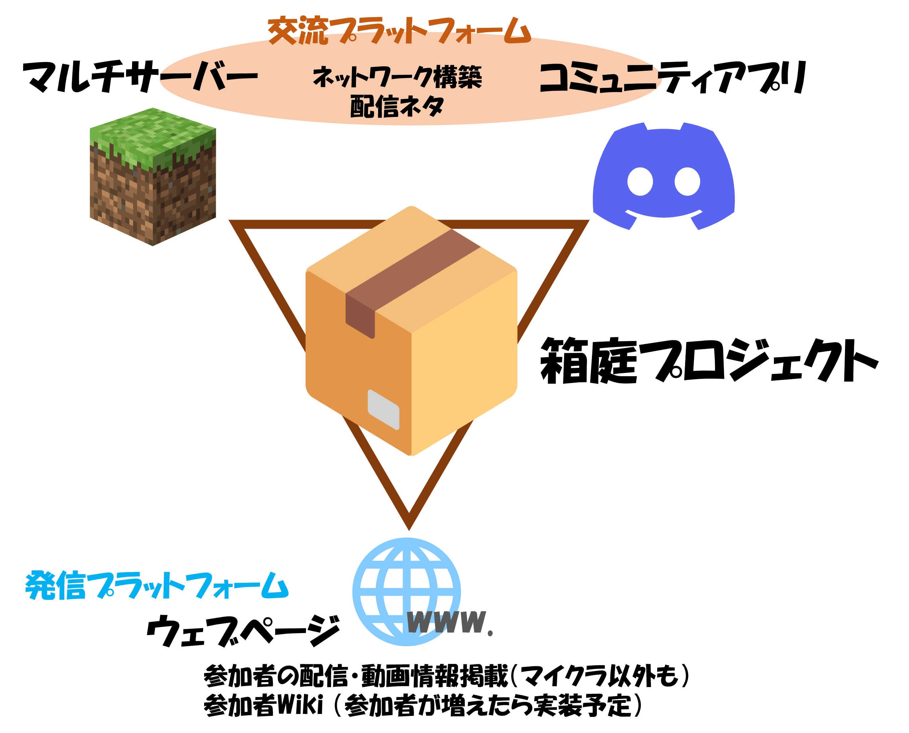

図 プロジェクトのコンセプト

交流プラットフォームとして
大手バーチャルライバー事務所にはマイクラサーバーを運営しているところもあり、そこではアクターがそれぞれに目的をもって配信をしています。本プロジェクトでも、基本的には同様のスタンスを想定しています。プロジェクト参加者は個人の目的に沿ってマイクラをプレイしたり配信したり。その中でたまたま同じタイミングでサーバーにいる他の参加者となんとなくセッションを組むこともある、そんなイメージです。参加者同士のコミュニケーションのボーダーを下げる工夫として、Discordサーバーも用意しました。これは機材やソフトの設定の相談や凸／逆凸のような配信でも活用できるかもしれません。
発信プラットフォームとして
チャンネルを大きくしていくには露出することが重要です。参加者は、YoutubeやTwichで様々なゲームの実況配信や雑談配信などをしています。いくら良質な配信・動画であっても、それらの動画サイトでは埋もれてしまって、なかなか見つけてもらえないのが現実です。プロジェクトのウェブページでは、参加者のそれらサイトでの最新の動画情報を抽出し、掲載しています。また、今後は参加者の紹介Wiki（いわゆる非公式Wiki）も設ける予定でいます。このWikiは、他の参加者と交流する際のネタ帳になるかもしれませんし、自身の活動の履歴資料としても活用できるかもしれません。また、ファンにとってはこのWikiを通じて推しの新しい魅力を見つけたり、新しい推しをみつける機会になるでしょう。
プロジェクト名への想い
プロジェクト名には、以下の意味が込められています。・マイクラ（箱庭ゲーム）を主軸に展開するプロジェクトであること
・大手バーチャルライバー事務所のオマージュとしての数字による表現8528
・このプロジェクト（箱）と、いずれここから巣立っていくバーチャルライバー（2羽のぴよ）
本プロジェクトがバーチャルライバーの活動支援の一端になったら嬉しいです。